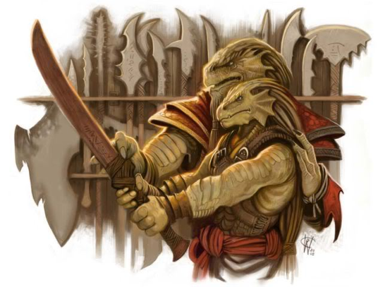
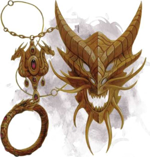

Drakéide
Nés de dragons, comme leur nom le laisse entendre, les drakéides marchent fièrement dans un monde qui les accueille avec une incompréhension craintive. Façonnés par les dieux draconiques ou les dragons eux-mêmes, à l'origine les drakéides ont éclos d'œufs de dragons pour ensuite former une race à part entière qui combine les meilleurs attributs des dragons et des humanoïdes. Certains drakéides sont de fidèles serviteurs des vrais dragons, d'autres forment les rangs des soldats dans de grandes guerres, et d'autres encore se trouvent à la dérive, sans vocation claire dans la vie.
Fiers parents des dragons
Son père se tenait sur la première des trois marches qui descendaient du portail, immobile. Les écailles de son visage avaient pâli sur les bords, mais Clanless Mehen avait toujours l’air de pouvoir renverser un ours géant à mains nues. Sa vieille armure usée avait disparu, remplacée par une armure d’écaille violette avec de fins traits argentés et brillants. Il y avait également un blason sur son bras, le symbole d'une maison étrangère. L'épée dans son dos était la même, cependant, celle qu'il portait même avant qu'il n’ait recueilli les jumelles abandonnées dans des langes aux portes de Arush Vayem. Durant toute sa vie, Farideh avait su que lire les expressions du visage de son père était une compétence qu'elle avait eu de la chance d'apprendre. Un humain qui ne pouvait pas repérer les changements dans ses yeux ou dans ceux d’Havilar ne verrait certainement qu’une indifférence draconique transparaître sur le visage de Clanless Mehen. Mais le glissement des écailles, l'arc d'une crête, le jeu de ses yeux, l'ouverture de ses dents - le visage de son père en disait long. Mais toutes ses écailles, cette fois, semblaient complètement immobiles - l'indifférence d'un dragon, même pour Farideh.
- Erin M. Evans, L'adversaire
Les drakéides ressemblent beaucoup à des dragons sous forme humanoïde, bien qu'ils leurs manquent des ailes et une queue. Les premiers drakéides avaient des écailles de teintes vives correspondant aux couleurs de leurs parents draconiques, mais des générations de croisements ont créé une apparence plus uniforme. Leurs petites écailles fines sont généralement de la couleur du cuivre ou du bronze, tirant parfois vers l'écarlate, le brun-rouille, l'or ou le vert-de-gris. Ils sont grands et solidement bâti, faisant souvent près de 1,95 mètre et pesant plus de 150 kg. Leurs mains et leurs pieds sont puissants, semblables à des serres griffues dotées de trois doigts et d’un pouce sur chaque main. Le sang d'un type particulier de dragon coule très fortement dans certains clans drakéides. Ceux-ci leur offrent souvent des écailles qui correspondent davantage à celles de leur ancêtre dragon - rouge vif, vert, bleu ou blanc, noir brillant ou d’étincelant éclats d'or, d'argent, d'étain, de cuivre ou de bronze.
Clans autonomes
Pour tout drakéide, le clan est plus important que la vie elle-même. Les drakéides doivent dévouement et respect à leur clan par-dessus tout, même les dieux. La conduite de chaque drakéide se reflète sur l'honneur de son clan, et le déshonorer peut entraîner l'expulsion et l'exil. Chaque drakéide connaît son poste et sa fonction au sein du clan, et les exigences d'honneur maintiennent les limites de cette position. Un entraînement continu pour l'auto-amélioration reflète l'autosuffisance de la race dans son ensemble. Les drakéides estiment la compétence et l'excellence en toute chose. Ils détestent l'échec, et poussent leurs efforts à l'extrêmes avant qu'ils ne renoncent à quelque chose. Un drakéide qui recherche la maîtrise d'une compétence particulière en fait l’objectif de sa vie entière. Les membres d'autres races qui partagent le même engagement arrivent facilement à gagner le respect d'un drakéide. Bien que tous les drakéides s’efforcent d'être auto-suffisant, ils reconnaissent que de l'aide est parfois nécessaire dans les situations difficiles. Mais la meilleure source pour une telle aide est le clan, et quand un clan a besoin d'aide, il se tourne vers un autre clan drakéide avant de demander de l'aide à d’autres races, ou même aux dieux.
Noms drakéides
Les drakéides ont des noms personnels donnés à leur naissance, mais donnent le nom de leur clan en premier comme marque d'honneur. Un nom d’enfance ou un surnom est souvent utilisé chez leurs camarades comme un terme descriptif ou un terme d'affection. Le nom peut rappeler un événement ou être centré sur une habitude.
Noms masculins : Arjhan, Balasar, Bharash, Donaar, Ghesh, Heskan, Kriv, Medrash, Mehen, Nadarr, Pandjed, Patrin, Rhogar, Shamash, Shedinn, Tarhun, Torinn.
Noms féminins : Akra, Biri, Daar, Farideh, Harann, Flavilar, Jheri, Kava, Korinn, Mishann, Nala, Perra, Raiann, Sora, Surina, Thava, Uadjit.
Noms d'enfant : Climber, Earbender, Leaper, Pious, Shieldbiter, Zealous.
Noms de clan : Clethtinthiallor, Daardendrian, Delmirev, Drachedandion, Fenkenkabradon, Kepeshkmolik, Kerrhylon, Kimbatuul, Linxakasendalor, Myastan, Nemmonis, Norixius, Ophinshtalajiir, Prexijandilin, Shestendeliath, Turnuroth, Verthisathurgiesh, Yarjerit.
Traits
Votre ascendance draconique se manifeste par différents traits que vous partagez avec les autres drakéides.
Augmentation de caractéristiques. Votre Force augmente de 2 et votre Charisme de 1.
Âge. Les jeunes drakéides grandissent rapidement. Ils marchent juste quelques heures après l'éclosion, atteignent la taille et le développement d'un enfant humain de dix ans à l'âge de 3 ans, et sont adultes à 15 ans. Ils vivent environ 80 ans.
Taille. Les drakéides sont plus grands et plus lourds que les humains, mesurant plus de 1,80 mètre pour un poids moyen de près de 125 kg. Votre taille est Moyenne (M).
Vitesse. Votre vitesse de base est de 9 mètres.
Ascendance draconique. Vous avez une ascendance draconique. Choisissez un type de dragon dans la table ci-dessous. Votre souffle et votre résistance aux dégâts sont déterminés par le type de dragon, comme indiqué dans la table.
Souffle. Vous pouvez utiliser votre action pour libérer un souffle d'énergie destructrice. Votre ascendance draconique détermine la taille, la forme et le type de dégâts de votre souffle. Lorsque vous utilisez votre souffle, toute créature dans la zone de l'expiration doit faire un jet de sauvegarde, dont le type est déterminé par votre ascendance draconique. Le DD de ce jet de sauvegarde est égal à 8 + votre modificateur de Constitution + votre bonus de maîtrise. En cas d'échec, la créature subit 2d6 dégâts, ou la moitié de ces dégâts en cas de réussite. Les dégâts augmentent à 3d6 au niveau 6, 4d6 au niveau 11, et 5d6 au niveau 16. Après avoir utilisé votre souffle, vous devez terminer un repos court ou long pour pouvoir l'utiliser à nouveau.
DRACONIENS
Dans l’univers de Dragonlance, les adeptes de la déesse du mal Takhisis ont appris un rituel sombre qui leur a permis de corrompre des œufs de dragons métalliques, donnant naissance à des drakéides maléfiques appelés draconiens. Cinq types de draconiens, correspondant aux cinq types de dragons métalliques, se sont battus pour Takhisis dans la Guerre de la Lance : les auraks (or), les baz (étain), les bozak (bronze), les kapak (cuivre) et les sivak (argent). En lieu et place de leur souffle draconique, ils possèdent des capacités uniques et magiques.
| Dragon | Type de dégâts | Souffle |
| Blanc | Froid | cône de 4,50 m (JdS de Con.) |
| Bleu | Foudre | ligne de 1,50 x 9 m (JdS de Dex.) |
| Noir | Acide | ligne de 1,50 x 9 m (JdS de Dex.) |
| Rouge | Feu | cône de 4,50 m (JdS de Dex.) |
| Vert | Poison | cône de 4,50 m (JdS de Con.) |
| Airain | Feu | ligne de 1,50 x 9 m (JdS de Dex.) |
| Argent | Froid | cône de 4,50 m (JdS de Con.) |
| Bronze | Foudre | ligne de 1,50 x 9 m (JdS de Dex.) |
| Cuivre | Acide | ligne de 1,50 x 9 m (JdS de Dex.) |
| Or | Feu | cône de 4,50 m (JdS de Dex.) |
Résistance aux dégâts. Vous obtenez la résistance au type de dégâts associé à votre ascendance draconique.
Langues. Vous pouvez parler, lire et écrire le commun et le draconique. Le draconique passe pour être l'une des plus anciennes langues et est souvent utilisé dans l'étude de la magie. La langue semble cassante pour la plupart des autres créatures, et comprend de nombreuses consonnes dures et sifflantes.
Drakéide métallique
Version officielle du Fizban’s Treasury of Dragons de cette sous-race mise en ligne par WotC lors du D&D Celebration 2021.
Les drakéides d'ascendance métallique héritent de la ténacité des dragons métalliques (airain, argent, bronze, cuivre et or) dont les teintes brillent dans leurs écailles. Ils sont le feu du foyer et de la forge, le froid de l'air des hautes montagnes, l'étincelle de l'inspiration et le contact décapant de l'acide qui purifie.
Traits
Vous avez les traits raciaux suivants.
Augmentation de caractéristiques. Augmentez une valeur de 2 et une autre de 1, ou augmentez trois valeurs de 1.

Type de créature. Vous êtes un humanoïde.
Taille. Votre taille est Moyenne (M).
Vitesse. Votre vitesse de base est de 9 mètres.
Ascendance métallique. Vous généalogie remonte à un dragon métallique, ce qui vous confère une affinité magique spéciale. Choisissez un type de dragon dans la table ci-dessous. Cela déterminera le type de dégâts caractérisant vos autres traits, comme indiqué dans la table.
| Dragon | Type de dégâts |
| Airain | Feu |
| Argent | Froid |
| Bronze | Foudre |
| Cuivre | Acide |
| Or | Feu |
Souffle. Lorsque vous effectuez l'action Attaquer à votre tour, vous pouvez remplacer l'une de vos attaques par un souffle d'énergie magique dans un cône de 4,50 mètres. Chaque créature dans cette zone doit faire un jet de sauvegarde de Dextérité dont le DD est égal à 8 + votre modificateur de Constitution + votre bonus de maîtrise. En cas d'échec, la créature subit 1d10 dégâts du type associé à votre ascendance métallique, ou la moitié de ces dégâts en cas de réussite. Ces dégâts augmentent de 1d10 au niveau 5 (2d10), au niveau 11 (3d10) et au niveau 17 (4d10). Vous pouvez utiliser votre Souffle un nombre de fois égal à votre bonus de maîtrise, et vous récupérez toutes les utilisations dépensées lorsque vous terminez un repos long.
Résistance draconique. Vous avez la résistance au type de dégâts associé à votre ascendance métallique.
Souffle métallique. Au niveau 3, vous gagnez un deuxième souffle. Lorsque vous effectuez l'action Attaquer à votre tour, vous pouvez remplacer l'une de vos attaques par un souffle dans un cône de 4,50 mètres. Le DD du jet de sauvegarde pour ce souffle est égal à 8 + votre modificateur de Constitution + votre bonus de maîtrise. Chaque fois que vous utilisez ce trait, choisissez l’un des effets suivants :
Souffle débilitant. Chaque créature dans le cône doit réussir un jet de sauvegarde de Constitution ou être incapable d'agir jusqu'au début de votre prochain tour.
Souffle répulsif. Chaque créature dans le cône doit réussir un jet de sauvegarde de Force ou être repoussée sur 6 mètres et tomber à terre.
Après avoir utilisé votre Souffle métallique, vous devez terminer un repos long avant de pouvoir l'utiliser à nouveau.
Langues. Vous pouvez parler, lire et écrire le commun et une autre langue que vous et votre MD reconnaissez comme appropriée pour le personnage.
Drakéide chromatique
Cette race a été publiée dans le supplément Fizban’s Treasury of Dragons.
Drakéide de gemmes
Cette race a été publiée dans le supplément Fizban’s Treasury of Dragons.
Traduit par Garruth et blueace